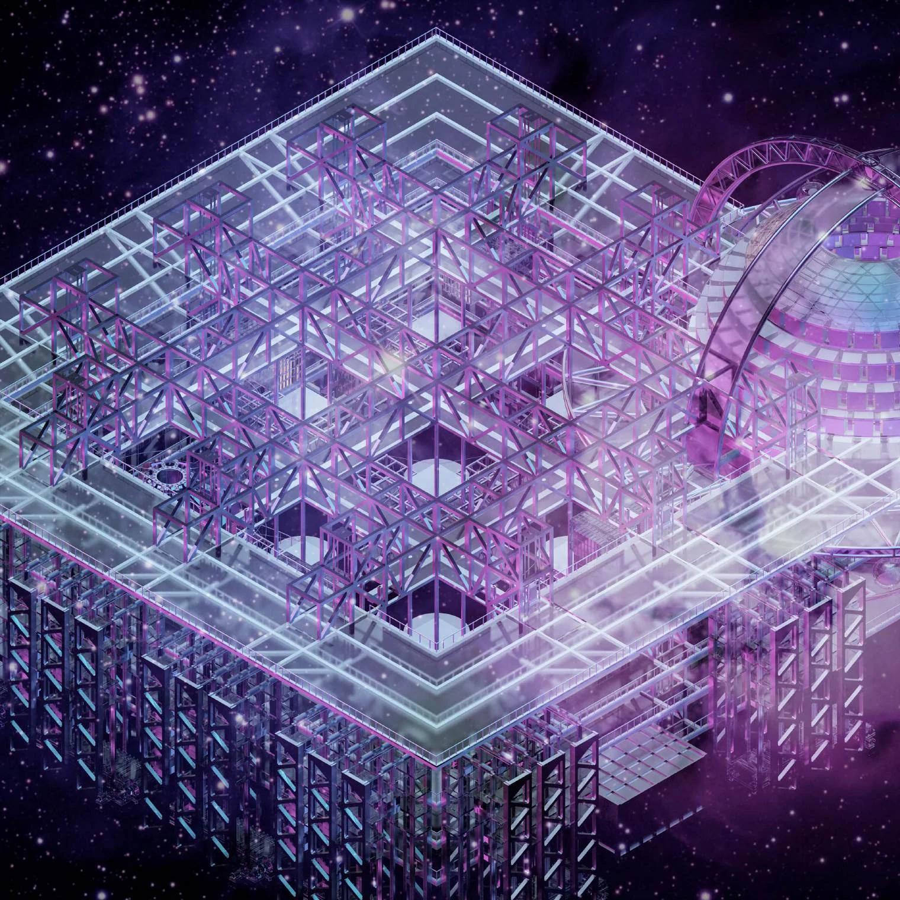
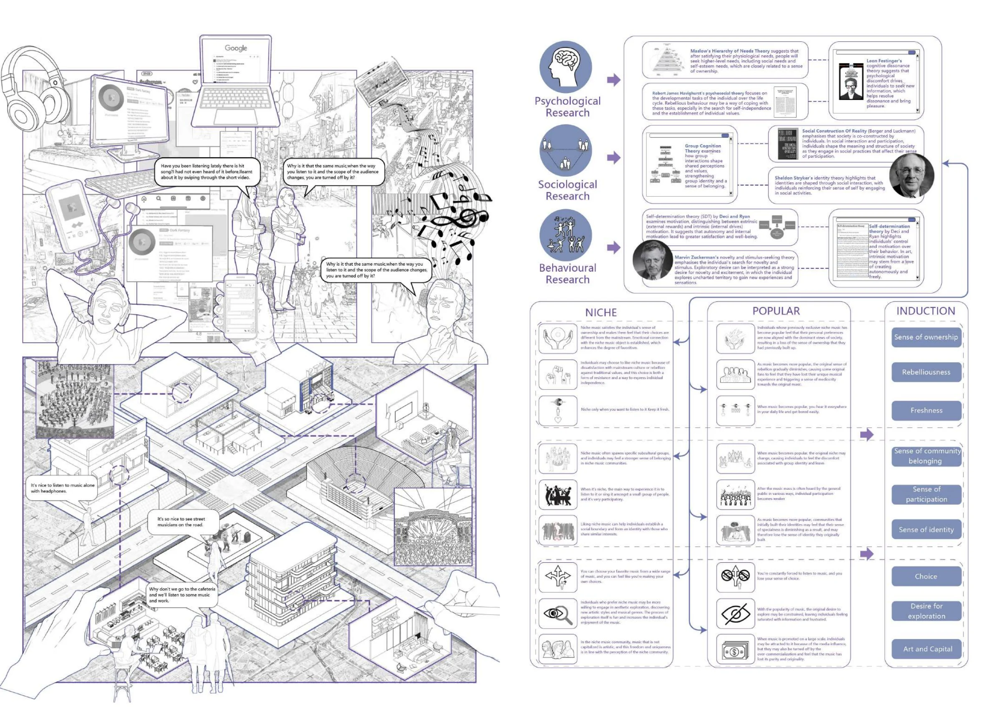
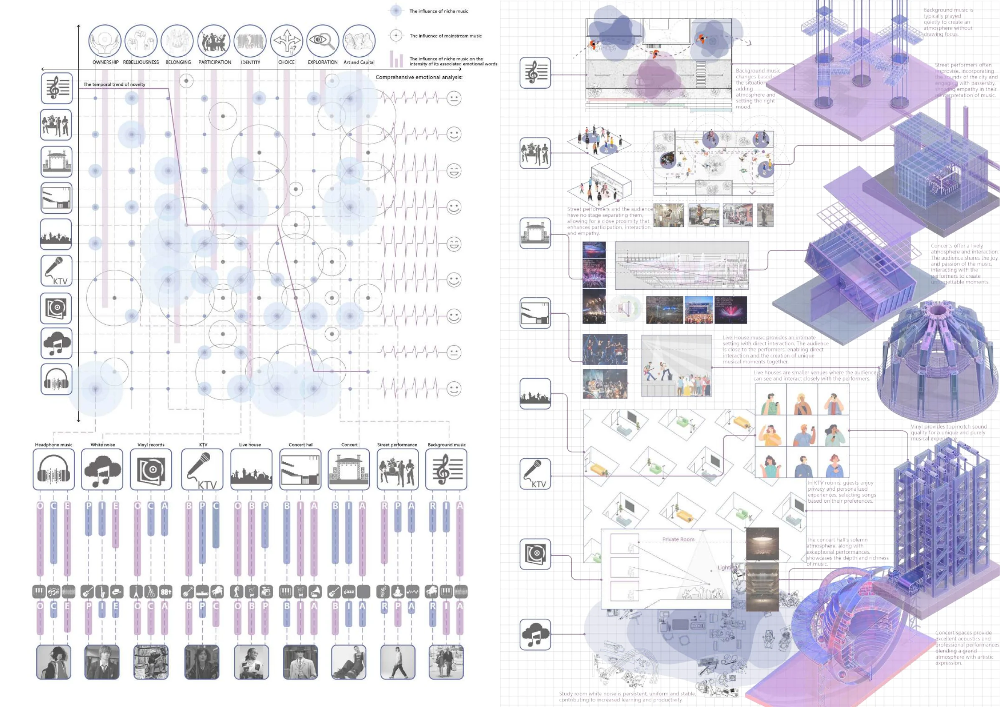
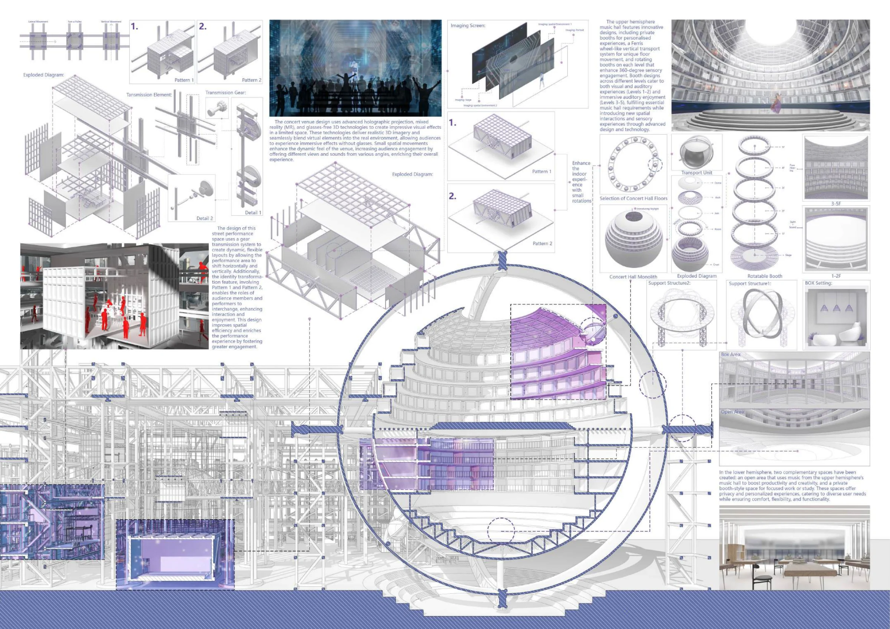
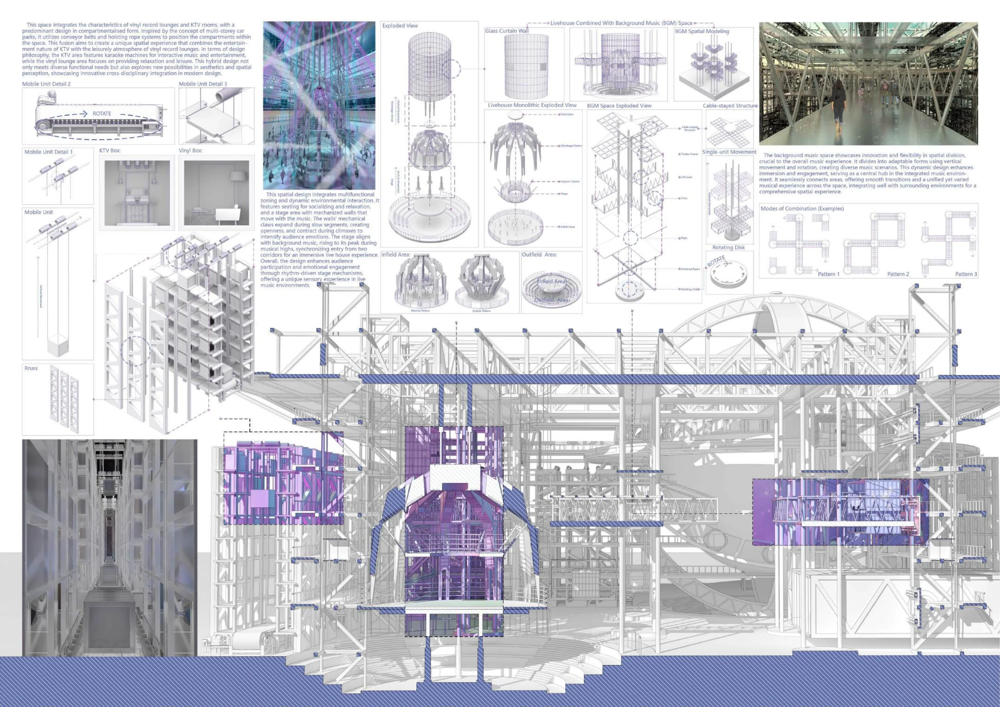
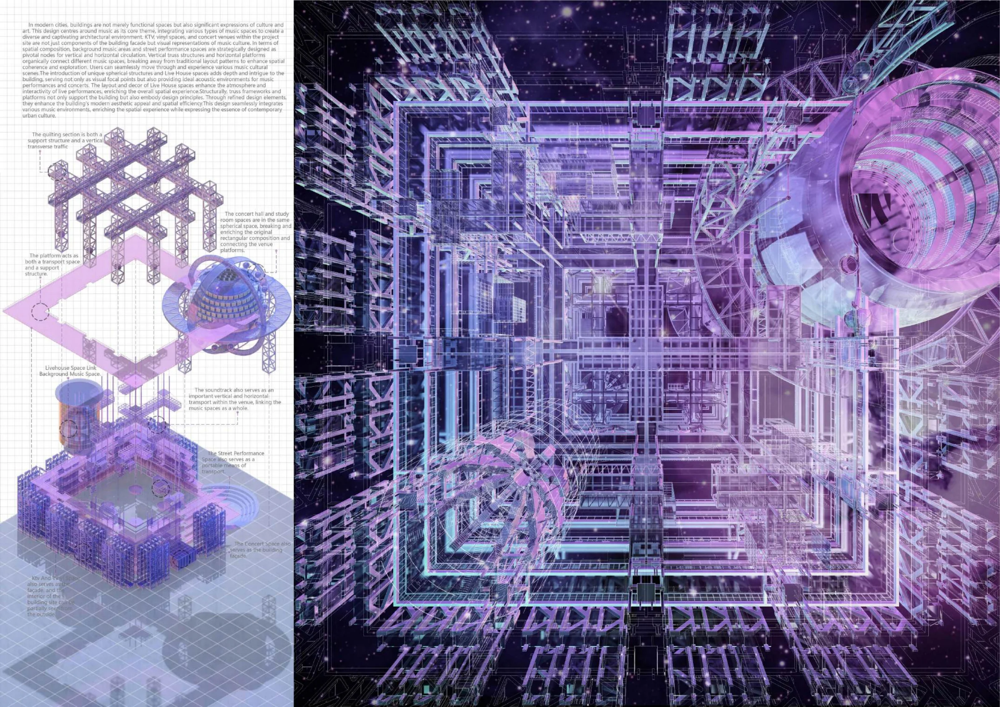

Music Utopia
音乐乌托邦
音乐 × 建筑2024 / 个人项目

查看主图把听觉中的节奏，转译为空间中的体验。
从日常生活中九种音乐形式出发，提取各自的特点，并与人们熟悉的空间形式进行类比。设计以动态建筑概念组织听觉、视觉与身体感受，探索音乐如何成为一种可以进入的空间。
- 项目类型
- 个人项目 / 2024
- 本人工作
- 研究、音乐特征提取、空间概念、Rhino建模与V-Ray渲染
- 使用工具
- Rhino / V-Ray
感知与研究
观察音乐在日常生活中的不同使用方式，整理九种音乐形式及其体验特点。
跨媒介转译
将音乐中的节奏、情绪与组织方式，类比为空间、构件与运动关系。
空间表达
完成建筑概念、场景建模与渲染，展示音乐乌托邦的空间体验。
项目图纸与过程
点击图纸，查看大图。


查看大图

查看大图

查看大图

查看大图

查看大图